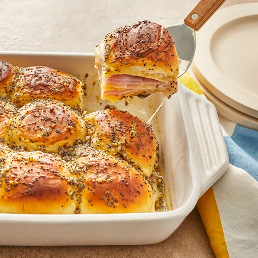

Baked Ham and Cheese Sliders

Baked Ham and Cheese Sliders
These baked ham and cheese sliders are the most delicious sandwiches and perfect for any party. They are so good that even the pickiest of eaters will eat these!
Ingredients
- cup melted butter
- tablespoons Dijon mustard
- teaspoons Worcestershire sauce
- tablespoons poppy seeds
Steps
- Gather all ingredients.
- Mix butter, Dijon mustard.
- Separate the tops from the bottoms of the rolls.
- Place the tops of the rolls onto the sandwiches. Pour mustard.